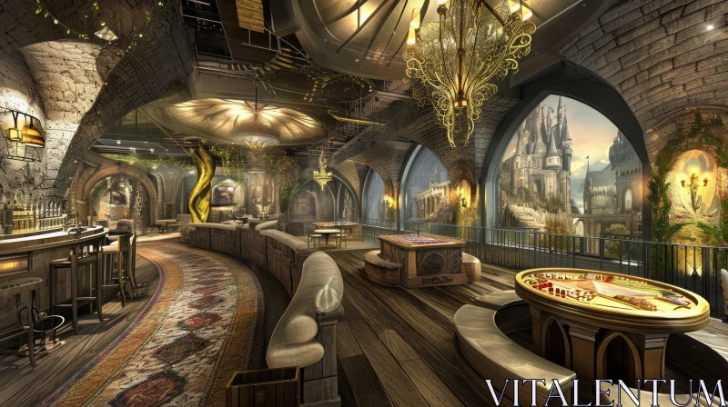
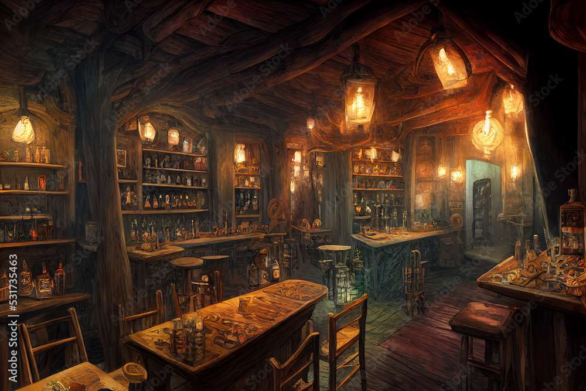

Zájezdní hostinec Trombus
Zájezdní hostinec kde se "nejde nezdržet". Zájezdní hostinec Trombus byl založen Embolem II., slavným hobitím hrdinou, který skolil velkého rudého draka tím, že mu uvíznul v krku.
Aktuálně je spravován Embolem VII., který pokračuje v rodinné tradici pohostinství té největší kvality. Trombus je hostinec kam se sjíždějí na dovolené a velké oslavy i šlechtici, kteří chtějí volno v nějakém tom luxusu.
Trombus čítá aktuálně asi sedm velkých domů a přibližně dvacet přidružených budov včetně lázní, vlastní udírny a přilehlých pastev pro místní koně, tur a jinou zvířenu.
Dobrodružství, která se zde odehrála:
Trombus na mapě

Trombus zevnitř

Trombus zevnitř